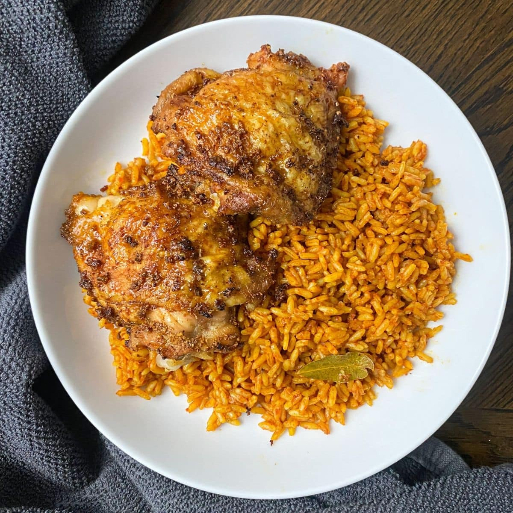

Odin Recipes
Jollof Rice

Description
Jollof rice is a popular West African dish made with rice cooked in a
tomato-based
sauce, often seasoned with ingredients like onions, garlic, and peppers.
It’s
typically served with vegetables and sometimes accompanied by meat, fish,
or
poultry. The dish is known for its rich, flavourful taste and vibrant red
colour.
Ingredients
- Rice
- Tomatoes
- Onions
- Bell Peppers
- Garlic
- Ginger
- Tomato paste
- Vegetable oil
- Thyme and Curry
- Salt
Steps
-
Ingredients: Gather rice, tomatoes,
onions, bell peppers, garlic, ginger,
tomato paste, stock (vegetable or chicken), oil, and seasonings (like
thyme and
curry powder).
-
Blend Vegetables: Blend tomatoes, onions,
bell peppers, garlic, and ginger
into a smooth paste.
-
Cook the Sauce: Heat oil in a pot, add the
blended paste, and cook until it thickens
and the oil starts to separate from the sauce.
-
Add Tomato Paste and Stock: Stir in tomato
paste and add the stock. Season
with thyme, curry powder, salt,
and pepper. Let it simmer.
-
Add Rice: Rinse the rice, then add it to
the pot. Stir to combine and ensure the
rice is well coated with
the sauce.
-
Cook the Rice: Add water if needed to cover
the rice. Reduce the heat, cover,
and cook until the rice is tender and the liquid is absorbed.
-
Serve: Fluff the rice with a fork and serve
with your choice of meat, fish, or vegetables.
More Recipes
Bread and Beans
Yam and Egg